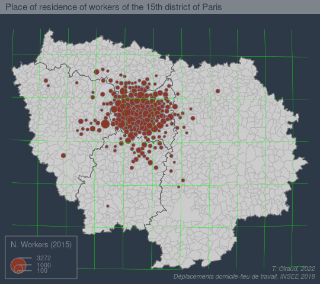
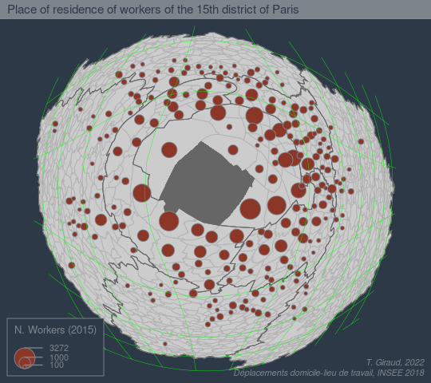
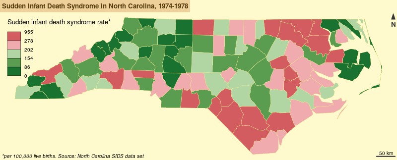
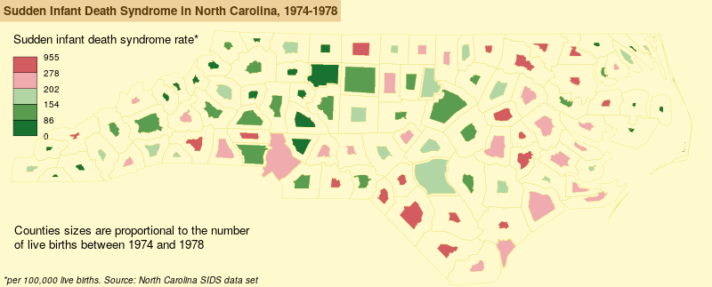

| Reverse Dependencies | ||||||
| Type | sf | stars | terra | raster | rgdal | rgeos |
|---|---|---|---|---|---|---|
| Depends | 35 | 3 | 14 | 64 | 9 | 8 |
| Imports | 413 | 27 | 114 | 284 | 112 | 70 |
| Suggests | 177 | 30 | 62 | 97 | 87 | 50 |
| Source : CRAN, 14 juin 2023 | ||||||
L’écosystème spatial de R
Rencontres R - Avignon
23 juin 2023
Vecteur et raster
Raster
C’est une image localisée dans l’espace.
L’information géographique est alors stockée dans des pixels.
Chaque pixel, défini par une résolution, possède des valeurs qui peuvent être traitées et cartographiées.

Vecteur et raster
Vecteur
Il s’agit d’objets géométriques de type points, lignes ou polygones.
Ces objets vectoriels ne pixellisent pas.
Chaque objet est défini par un identifiant unique.

Vecteurs et rasters

Le socle du socle
Des bibliothèques géographiques largement utilisées :
- GDAL - Geospatial Data Abstraction Library (GDAL/OGR contributors, 2022)
- PROJ - Coordinate Transformation Software (PROJ contributors, 2021)
- GEOS - Geometry Engine - Open Source (GEOS contributors, 2021)

rgdal, rgeos, maptools
Le package sf

Publié fin 2016 par Edzer Pebesma.
- import / export
- manipulation
- affichage
Des objets simples (standard simple feature) dont la manipulation est assez aisée.
Compatibilité du package avec les pipe (|> ou %>%) et les opérateurs du tidyverse.
Format

Les objets sf sont des data.frame dont l’une des colonnes contient des géométries.
Format très pratique, les données et les géométries sont intrinsèquement liées dans un même objet.
Affichage
plot(mtq)
plot(st_geometry(mtq))
Centroides

Agrégation

Zone tampon

Intersection


OpenStreetMap
 Une base de données cartographique libre et contributive.
Une base de données cartographique libre et contributive.
Conditions d’utilisation
OpenStreetMap est en données libres : vous êtes libre de l’utiliser dans n’importe quel but tant que vous créditez OpenStreetMap et ses contributeurs. Si vous modifiez ou vous appuyez sur les données d’une façon quelconque, vous pouvez distribuer le résultat seulement sous la même licence. (…)
Contributeurs
(…) Nos contributeurs incluent des cartographes enthousiastes, des professionnels du SIG, des ingénieurs qui font fonctionner les serveurs d’OSM, des humanitaires cartographiant les zones dévastées par une catastrophe et beaucoup d’autres. (…)
Couverture/complétude
- Données France : 4,1 GB
- Données Chine : 0,99 GB
- Données Afrique : 5,8 GB
Palettes de couleurs
De nombreuses palettes sont disponibles dans R-base.

Au moins 70 (soixante-dix !) packages proposent des palettes.
- 2018 :
paletteer(Emil Hvitfeldt) (2568 palettes !!!) - 2023 :
cols4all(Martijn Tennekes)
Misc
fisheye
  
Misc
cartogram
 
 
Bibliographie

Bivand, R. S. (2021). Progress in the R ecosystem for representing and handling spatial data. Journal of Geographical Systems, 23(4), 515‑546. https://doi.org/10.1007/s10109-020-00336-0
Bivand, R., Keitt, T. et Rowlingson, B. (2023). rgdal: Bindings for the ’Geospatial’ Data Abstraction Library. https://CRAN.R-project.org/package=rgdal
Bivand, R. et Rundel, C. (2023). rgeos: Interface to Geometry Engine - Open Source (’GEOS’). https://CRAN.R-project.org/package=rgeos
Dunnington, D. (2023). ggspatial: Spatial Data Framework for ggplot2. https://CRAN.R-project.org/package=ggspatial
GDAL/OGR contributors. (2022). GDAL/OGR Geospatial Data Abstraction software Library. Open Source Geospatial Foundation. https://doi.org/10.5281/zenodo.5884351
GEOS contributors. (2021). GEOS coordinate transformation software library. Open Source Geospatial Foundation. https://libgeos.org/
Giraud, T. (2022). mapsf: Thematic Cartography. https://CRAN.R-project.org/package=mapsf
Giraud, T. et Lambert, N. (2017). Reproducible Cartography. M. Peterson (dir.), Cham, Switzerland (p. 173‑183). https://doi.org/10.1007/978-3-319-57336-6_13
Giraud, T. et Pecout, H. (2023a). Cartographie avec R. https://doi.org/10.5281/zenodo.7528161
Giraud, T. et Pecout, H. (2023b). Géomatique avec R. https://doi.org/10.5281/zenodo.7528145
Hijmans, R. J. (2023a). raster: Geographic Data Analysis and Modeling. https://CRAN.R-project.org/package=raster
Hijmans, R. J. (2023b). terra: Spatial Data Analysis. https://CRAN.R-project.org/package=terra
Lambert, N. et Zanin, C. (2016). Manuel de cartographie: principes, méthodes, applications. Armand Colin.
Lovelace, R., Nowosad, J. et Muenchow, J. (2019). Geocomputation with R. CRC Press. https://r.geocompx.org/
Pebesma, E. (2018). Simple Features for R: Standardized Support for Spatial Vector Data. The R Journal, 10(1), 439‑446. https://doi.org/10.32614/RJ-2018-009
Pebesma, E. et Bivand, R. (2023). Spatial Data Science: With applications in R (p. 352). Chapman and Hall/CRC. https://r-spatial.org/book/
PROJ contributors. (2021). PROJ coordinate transformation software library. Open Source Geospatial Foundation. https://proj.org/
Tennekes, M. (2018). tmap: Thematic Maps in R. Journal of Statistical Software, 84(6), 1‑39. https://doi.org/10.18637/jss.v084.i06